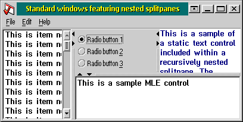

Using a splitpane in a standard window
To use a splitpane in a standard window you typically create it and its
children during the client window creation.
You might do that by creating each window via the
WinCreateWindow()
API or you might more comfortably use the
WinCreateSplitPane()
API which is part of the splitpane package.
The following code example shows how to create a splitpane,
containing a listbox on the left and a multi-line edit control on the right,
via the standard system APIs.
case WM_CREATE:
hwndChild1 = WinCreateWindow(
hwnd,
WC_LISTBOX,
NULL,
WS_VISIBLE | LS_NOADJUSTPOS,
0,0,0,0,
hwnd,
HWND_TOP,
ID_LBOXMAIN,
NULL,
NULL,
);
hwndSplitPane = WinCreateWindow(
hwnd,
WC_SPLITPANE,
NULL,
WS_VISIBLE,
0, 0,
((PCREATESTRUCT)mp2)->cx,
((PCREATESTRUCT)mp2)->cy,
hwnd,
HWND_TOP,
ID_SPLTMAIN,
NULL,
NULL
);
hwndChild2 = WinCreateWindow(
hwnd,
WC_MLE,
NULL,
WS_VISIBLE | MLS_BORDER | MLS_LIMITVSCROLL | MLS_VSCROLL,
0,0,0,0,
hwnd,
HWND_TOP,
ID_MLEMAIN,
NULL,
NULL,
);
WinSendMsg(hwndSplitPane, SPLITM_SET,
MPFROM2SHORT(SPLITMP_CHILDHWND, SPLITMP_PANE1),
(MPARAM)hwndChild1);
WinSendMsg(hwndSplitPane, SPLITM_SET,
MPFROM2SHORT(SPLITMP_CHILDHWND, SPLITMP_PANE2),
(MPARAM)hwndChild2);
...
The WinCreateSplitPane() API requires much less
code while allowing even complex layouts like the one displayed in the
image below.

The following code example creates the same layout of
the previous example with much less effort.
case WM_CREATE:
{
HWND hwndSplitPane;
SPLITPCREATE sc;
memset(&sc, 0, sizeof(sc);
sc.pane1.class =
WC_LISTBOX;
sc.pane1.style =
LS_NOADJUSTPOS;
sc.pane1.id = ID_LBOXMAIN;
sc.pane2.class =
WC_MLE;
sc.pane2.style =
MLS_BORDER |
MLS_LIMITVSCROLL |
MLS_VSCROLL;
sc.pane2.id = ID_MLEMAIN;
hwndSplitPane =
WinCreateSplitPane(
hwnd,
WS_VISIBLE,
ID_SPLTMAIN,
0, 0,
((
PCREATESTRUCT)mp2)->cx,
((
PCREATESTRUCT)mp2)->cy,
&sc);
...
}
In your client window procedure you should also
handle the WM_SIZE message in order to update the size
of the splitpane window leaving it the task of taking care of the size
and position of its (virtual) child panes.
Besides that, filtering WM_CHAR
messages for the VK_TAB and
VK_BACKTAB keys would allow to control the
splitter and to switch the focus among the various controls via the
keyboard.